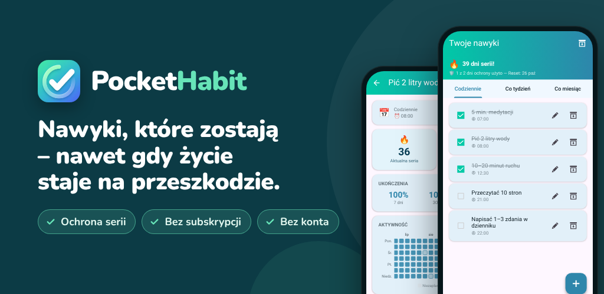

PocketHabit: Tracker nawyków
Tracker nawyków z ochroną serii: trwałe nawyki, elastycznie i bez subskrypcji.
Google PlayChcesz budować lepsze nawyki, ale życie ciągle staje na przeszkodzie? PocketHabit to tracker nawyków, który daje ci prawo do bycia człowiekiem.
STWORZONY DLA POCZĄTKUJĄCYCH
Bez skomplikowanej konfiguracji. Bez konta. Bez subskrypcji. Po prostu otwórz aplikację, dodaj pierwszy nawyk i zaczynaj. Dzięki krótkiemu wprowadzeniu wystartujesz w niecałą minutę.
JAK TO DZIAŁA
- Dodaj pierwsze nawyki – albo wybierz z gotowych propozycji we wprowadzeniu
- Odhaczaj je jednym dotknięciem
- Patrz, jak rośnie twoja seria – ochrona serii łagodzi dni, które nie idą zgodnie z planem
NIKT NIE JEST IDEALNY
Wyjątkowa ochrona serii w PocketHabit rozumie, że prawdziwa zmiana wymaga czasu. Jeśli opuścisz dzień, twoja seria nie przerywa się od razu – masz zapas, który pomaga ci wrócić na właściwe tory. Ty decydujesz, jak surowo ma być:
- Początkujący: 2 opuszczone dni na tydzień dozwolone
- Łatwy: 1 opuszczony dzień na tydzień
- Normalny: 1 opuszczony dzień na 14 dni
- Trudny: 1 opuszczony dzień na miesiąc
Rozwijaj się we własnym tempie – a gdy będziesz gotowy, podnieś poziom trudności.
WSZYSTKIE NAWYKI W JEDNEJ APLIKACJI
Codzienne rutyny, cotygodniowe zadania czy miesięczne cele – PocketHabit ogarnie wszystko:
- Codziennie: poranna rutyna, ćwiczenia, picie wody
- Co tydzień: wybierz konkretne dni tygodnia
- Co miesiąc: stała data lub np. „co 2. poniedziałek miesiąca”
PRZYPOMNIENIA DOPASOWANE DO CIEBIE
Zamiast ustawiać osobne przypomnienie dla każdego nawyku, włącz jedno globalne codzienne przypomnienie. Otwórz aplikację i odhacz wszystko naraz. Tak prosta może być rutyna. Wolisz osobne godziny? Każdy nawyk może mieć też własne przypomnienie.
TWOJA APLIKACJA, TWÓJ STYL
Wybieraj spośród wielu motywów kolorystycznych i przełączaj się między trybem ciemnym a jasnym. Aplikacja, którą lubisz otwierać każdego dnia, pomaga ci wytrwać.
STATYSTYKI, KTÓRE MOTYWUJĄ
Zobacz na pierwszy rzut oka, jak poszło ci w tym tygodniu i w tym miesiącu. Widok szczegółów pokazuje mapę cieplną twoich ukończeń, wskaźnik ukończenia i twoją najlepszą serię.
- Kalendarz miesięczny: każdy dzień ma kolor zależny od tego, ile udało ci się zrobić
- Przegląd dni tygodnia: zobacz, które dni idą ci najlepiej
- Wskaźniki ukończenia z ostatnich 7, 30 i 90 dni
OSIĄGNIĘCIA, KTÓRE MOTYWUJĄ
30 osiągnięć nagradza twoje postępy: pierwszą 7-dniową serię, idealne tygodnie i miesiące, a nawet powrót po przerwie.
CODZIENNA DAWKA MOTYWACJI
Każdy dzień zaczyna się od nowej kartki z kalendarza do zrywania – jednego z 240 krótkich cytatów, które pomagają wytrwać.
TWOJE DANE POD TWOJĄ KONTROLĄ
- Eksportuj nawyki do pliku kopii zapasowej i przywróć je na nowym telefonie
- Wstrzymuj nawyki w archiwum – ich statystyki zostają zachowane
DLA KOGO JEST TEN TRACKER NAWYKÓW?
Dla każdego, kto chce zacząć od małych kroków i wytrwać – czy chodzi o picie większej ilości wody, czytanie co wieczór, trening trzy razy w tygodniu, czy porządek w domu. Zwłaszcza jeśli zbyt surowa aplikacja do nawyków kiedyś zniechęciła cię po jednym opuszczonym dniu.
PREMIUM: ZAPŁAĆ RAZ, KORZYSTAJ ZAWSZE
Bez subskrypcji. Bez miesięcznych opłat. Kup raz i korzystaj na zawsze:
- Całkowicie bez reklam
- Dostęp do wszystkich motywów
- Historia statystyk ponad 2 lata (zamiast 6 miesięcy)
- Ochrona serii bez oglądania reklam
- Wszystkie przyszłe funkcje Premium w cenie
TWORZONY Z UŻYTKOWNIKAMI, DLA UŻYTKOWNIKÓW
PocketHabit rośnie razem z tobą. Nowe funkcje powstają tylko wtedy, gdy prawdziwi użytkownicy naprawdę ich chcą. Twoja opinia ma znaczenie – napisz do nas i pomóż ulepszyć aplikację.
Prywatność: wszystkie dane o twoich nawykach zostają na twoim urządzeniu. Konto nie jest potrzebne.
Pobierz teraz i zrób pierwszy krok do najlepszej wersji siebie.